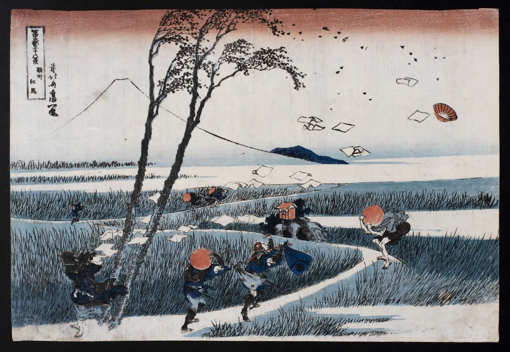
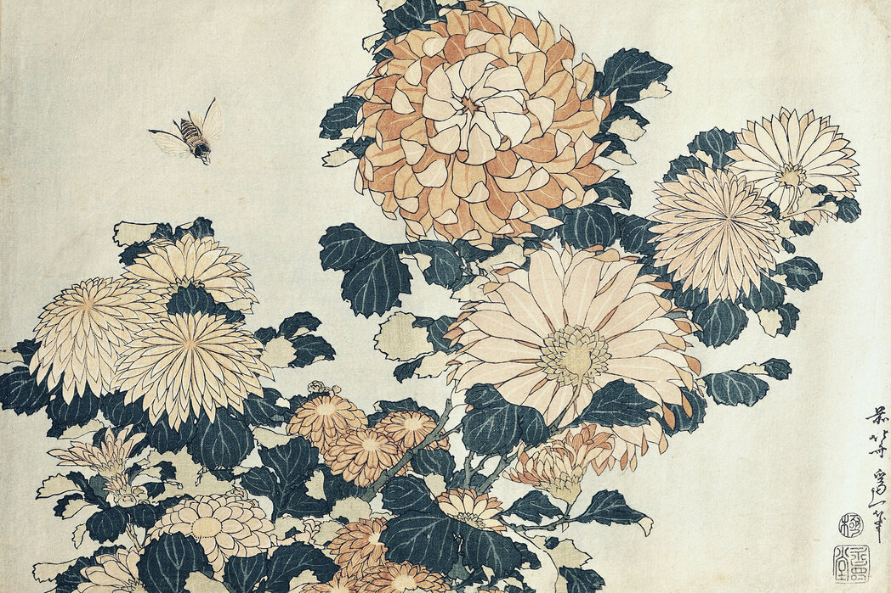
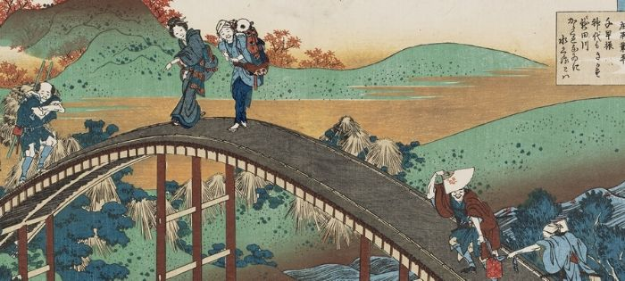
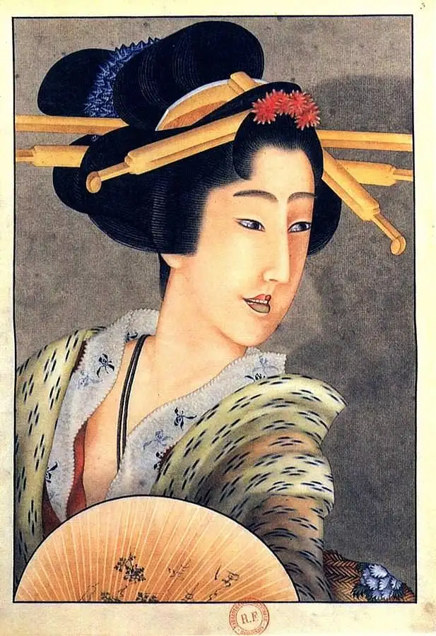
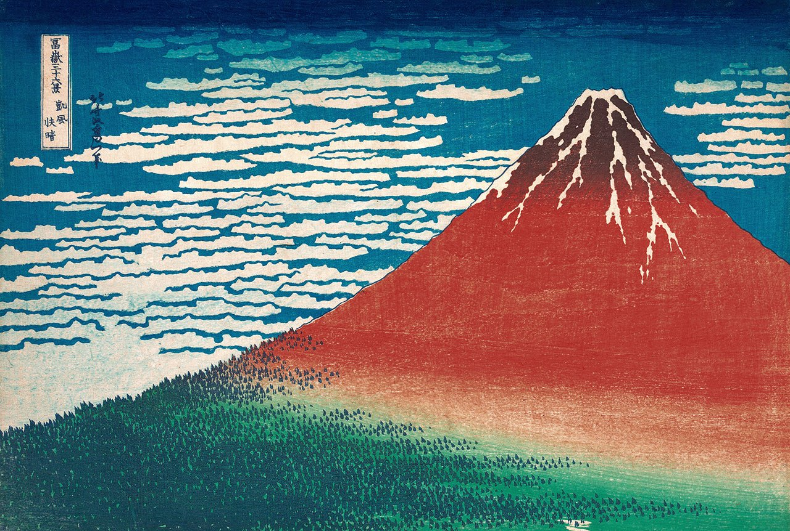
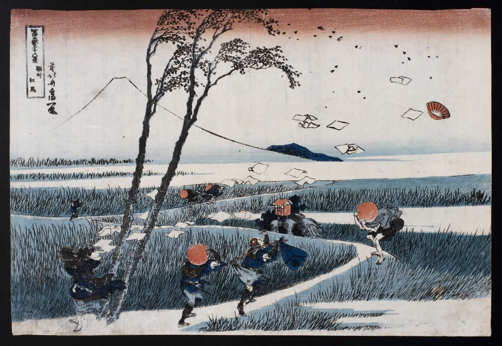
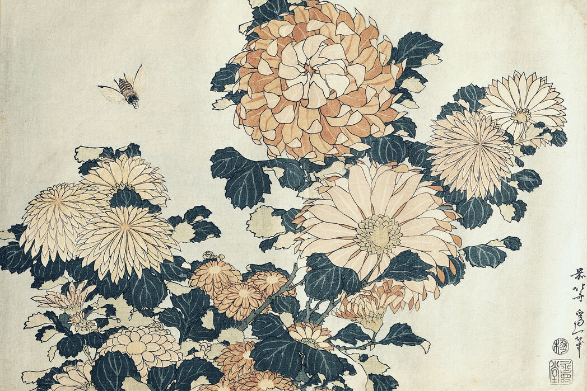
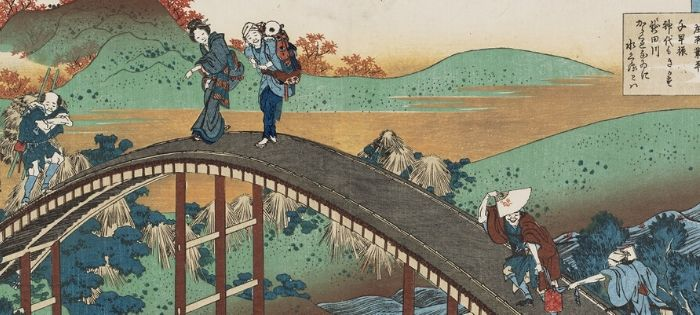
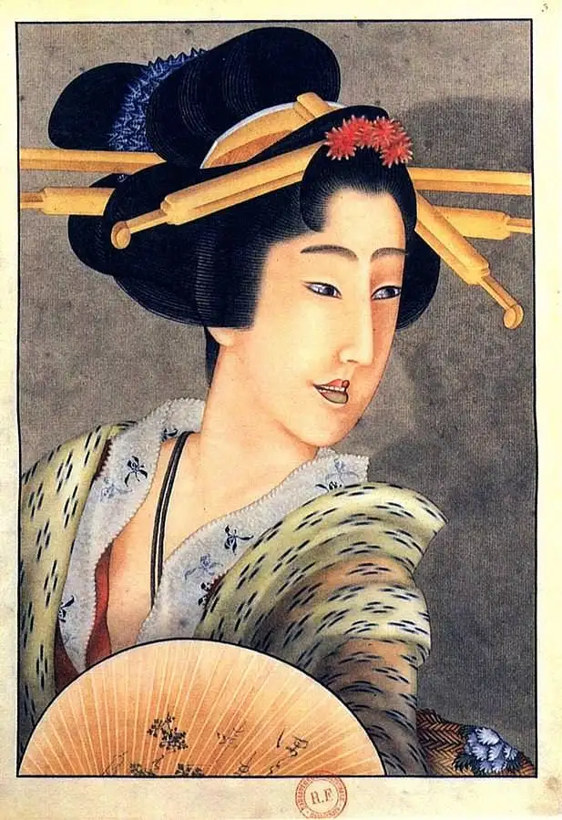
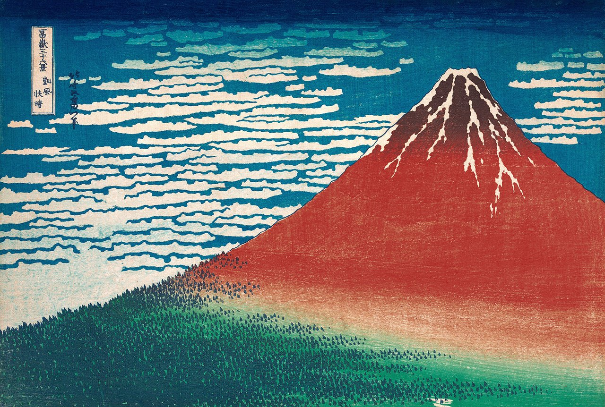

Torna alla home page
Katsushika Hokusai
Katsushika Hokusai è stato un celebre artista giapponese del periodo Edo, conosciuto soprattutto per le sue opere di xilografia. Nato nel 1760 a Edo, le sue opere, come "La grande onda di Kanagawa", sono diventate icone dell'arte giapponese e sono riconosciute in tutto il mondo. Hokusai è particolarmente noto per il suo stile distintivo e la sua capacità di catturare la bellezza della natura e la vita quotidiana in Giappone. Ha prodotto un corpus impressionante di opere durante la sua lunga carriera, esplorando una vasta gamma di soggetti e tecniche artistiche. La sua influenza si estende ben oltre il suo tempo, influenzando artisti giapponesi e occidentali fino ai giorni nostri.
 








